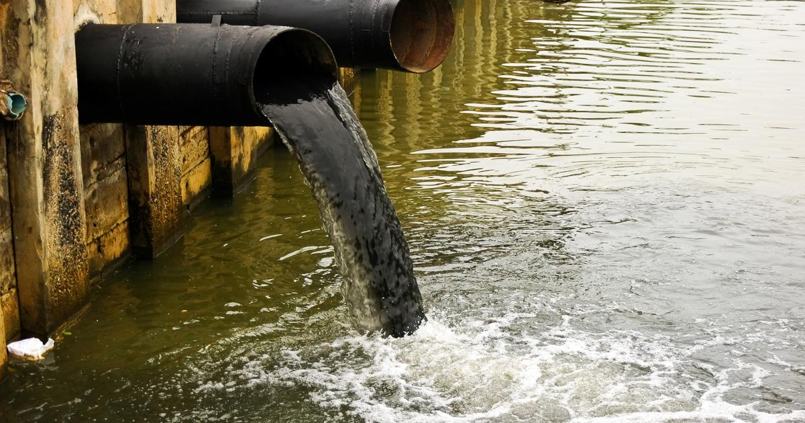

Many factors contribute to a lack of clean drinking water in some countries, including water scarcity, pollution. Climate change and natural disasters like droughts also play a significant role. Inadequate water management practices, such as overuse and wastage, further exacerbate the problem.
Climate Change:
Changes in rainfall patterns and increasing temperatures can lead to droughts and reduce the availability of freshwater resources, according to BYJU'S.
Natural Disasters:
Floods and droughts can disrupt water supplies and contaminate existing sources, according to Climate-ADAPT.
Increased Consumption:
Population growth and rising living standards lead to increased demand for water, putting pressure on existing resources, according to BYJU'S.
Overuse and Wastage:
Inefficient irrigation systems in agriculture and water leaks in infrastructure contribute to significant losses, according to the World Wildlife Fund.
Industrial and Agricultural Runoff:
Pollutants from factories and agricultural activities contaminate water sources, according to the World Wildlife Fund.
Lack of Sanitation:
Inadequate sewage systems and wastewater treatment facilities can contaminate water sources, according to the World Wildlife Fund.
Mining Activities:
Mining operations can release heavy metals and other pollutants into groundwater and surface water, according to the World Wildlife Fund
